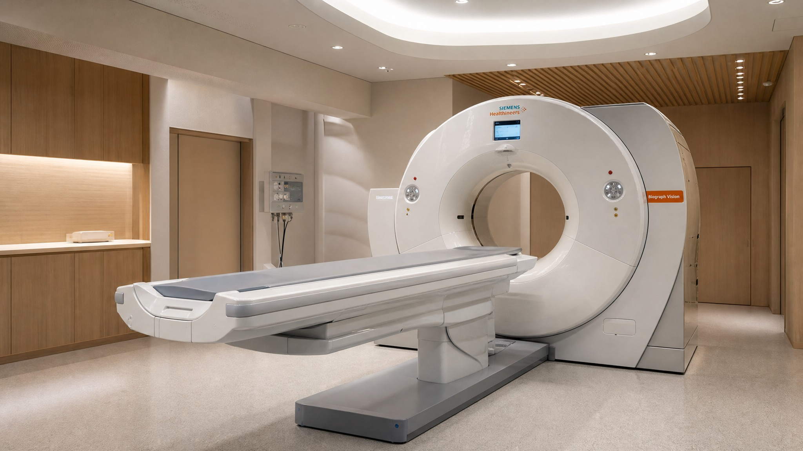

カナダ在住者のための、日本国内クリニックでの人間ドック・PET検査予約代行サービス。
Dedicated non-clinical coordination for advanced screenings in Japan — for residents of Canada.
空き状況を確認する Check Availabilityカナダで暮らす方々が、日本の高度な医療を検討する際の言葉や手続きの壁を取り除き、実務をサポートするために設立されました。
We help residents in Canada access premium healthcare in Japan by managing all logistics, paperwork, and translation.
バンクーバーを拠点に、現地の医療事情を理解した上で調整を行います。対面やオンラインでの「顔の見える」相談を大切にしています。
Based in Metro Vancouver, we provide personalized coordination. We offer online or in-person consultations in your timezone.
医療費、調整費、実費を明確に区分してご案内します。不透明な上乗せは一切行わず、事前に全体像を提示します。
We separate clinic fees from coordination costs. No hidden markups — just clear, upfront estimates.
人間ドックは、問診・身体測定・血液検査・画像検査などを組み合わせ、短期間で全身の状態を確認する日本の総合的な健康診断です。検査内容や所要時間は施設・コースによって異なります。
Ningen Dock is Japan's comprehensive health-screening format, combining a medical history review, physical measurements, laboratory tests, and imaging to assess overall health in a short period. Test menus and timing vary by clinic and programme.
JMCは、ご希望・滞在日程・予算を伺った上で、複数の検査施設・コースから検討しやすい選択肢をご案内し、予約や必要書類などの実務を調整します。
After discussing your preferences, travel schedule, and budget, JMC can present suitable options from multiple clinics and coordinate non-clinical logistics such as appointments and required documents.
※検査内容、予約状況、費用および受診可否は、各医療機関の確認・判断によります。
Availability, pricing, test content, and eligibility are subject to confirmation and clinical determination by each medical provider.
PET検査は、体内の糖代謝などを画像化する検査です。PET-CTなどの機器を用いるコースでは、必要に応じて解剖学的な画像情報とあわせて確認します。適した検査かどうかは、既往歴や目的により異なります。
PET imaging visualizes metabolic activity in the body. Programmes using PET-CT may combine this with anatomical images when appropriate. Whether it is suitable depends on your health history and the purpose of the examination.
JMCは医療上の適応判断や結果の診断は行いません。検査の選択や結果に関するご相談は、受診先の医師およびカナダの主治医にご確認ください。
JMC does not provide medical advice, determine clinical suitability, or interpret results. Please discuss test selection and results with the treating clinical professionals and your Canadian physician.

※PET検査の適応・結果の解釈は必ず医師にご相談ください。JMCは非医療のコーディネーターです。
Please consult a physician regarding PET scan suitability and result interpretation. JMC is a non-clinical coordinator.
フォームまたはメールでご連絡ください。通常48時間以内に返信し、詳細を伺う日程を調整します。
Contact us via the form or email. We normally respond within 48 hours to schedule a detailed discussion.
ご希望の検査内容・渡航スケジュール・予算をもとに、クリニック候補と概算費用をご提案します。
Based on your needs, travel schedule, and budget, we present clinic options and a cost estimate.
ご承認後、提携先の医療機関と連携して検査日程・書類・問診票の翻訳などを進めます。
After your approval, we coordinate with the clinic on scheduling, documents, and questionnaire translation.
渡航当日から受診までのスケジュール調整や現地連絡窓口を担当します。必要に応じて通訳や現地サポートも手配します。
We manage scheduling from arrival to your appointment and serve as your local point of contact. Interpretation and on-site support can be arranged.
検査結果の翻訳・要約を作成し、カナダの主治医に渡せる形式でお渡しします。帰国後の相談にも対応します。
We prepare a translated summary of your results in a format suitable for your Canadian physician, and remain available for post-visit questions.
はい。カナダ在住の日本人・日系の方、カナダ人を含め、日本で人間ドックや各種検査を受けるための調整をサポートします。ご帰国・ご旅行の予定に合わせ、受診先や日程の選択肢をご案内します。最終的な受診可否は、受診先の医療機関が判断します。
Yes. JMC supports Japanese, Japanese-Canadian, and Canadian residents who wish to receive a Ningen Dock or other medical screening in Japan. We can help identify options that fit your travel schedule. Final eligibility for any examination is determined by the receiving medical institution.
はい。英語でのご相談にも対応します。受診先や検査内容によっては、英語対応の可否を確認し、必要に応じて通訳または翻訳の手配についてご案内します。
Yes. We can communicate with you in English. Depending on the medical institution and examination, we will confirm English-language availability and can discuss interpretation or translation arrangements where needed.
JMCは非医療のコーディネーターとして、受診先に関する情報提供、予約に必要な情報整理、日程調整、通訳・翻訳の手配に関する調整、旅行代理店との連携などを支援します。実際に提供できるサポートの範囲は、ご希望の内容と受診先の体制に応じて事前にご案内します。
JMC is a non-clinical coordinator. We can assist with information about medical providers, preparation of booking information, scheduling, coordination of interpretation or translation, and liaison with travel professionals. The exact scope of support will be confirmed in advance based on your needs and the receiving provider’s arrangements.
調整費用は、受診内容、予約の複雑さ、通訳・翻訳の有無、現地サポートの範囲などによって異なります。医療費や旅行費とは区分し、可能な限り事前にサービス内容と費用の見積もりをご案内します。
Coordination fees depend on the type of examination, booking complexity, interpretation or translation needs, and the level of local support requested. JMC fees are separate from clinical and travel costs, and we will provide a clear scope of service and estimate in advance whenever possible.
医療費のほかに、JMCの調整費用、通訳・翻訳費用、航空券、宿泊、現地交通費などが必要になる場合があります。また、医師の判断により追加検査や追加診療が提案された場合は、別途費用が発生することがあります。費用の内訳は、可能な限り事前にご説明します。
In addition to medical fees, costs may include JMC coordination fees, interpretation or translation, flights, accommodation, and local transportation. Additional fees may also apply if the medical provider recommends further examinations or consultations. We will explain anticipated costs and exclusions as clearly as possible in advance.
人間ドックや予防目的の検査は、一般に保険適用外となることがあります。日本の公的医療保険、カナダの公的医療保険、民間保険、旅行保険の適用可否は、検査内容と個別の契約条件によって異なります。JMCは保険適用の判断を行わないため、受診前にご本人から保険会社および受診先医療機関へご確認ください。
Ningen Dock and preventive screening services are often not covered by insurance. Coverage under Japanese public insurance, Canadian public insurance, private insurance, or travel insurance depends on the service and your individual policy. JMC does not determine insurance coverage; please confirm directly with your insurer and the receiving medical institution before booking.
英語の結果報告書や英訳の可否は、受診先医療機関と検査内容によって異なります。予約前に確認し、必要に応じて英訳または翻訳手配の選択肢をご案内します。結果の発行時期や受け取り方法についても、事前にご説明します。
Availability of English reports or translations depends on the medical institution and the examination. We will confirm the available options before booking and can discuss translation arrangements if needed. We will also explain the expected timeline and method for receiving your results.
はい。ご本人の同意を前提に、結果をカナダのかかりつけ医と共有しやすい形で受け取るための調整を支援します。ただし、JMCは検査結果の医学的な解釈や、帰国後の治療方針に関する助言は行いません。帰国後のフォローアップは、かかりつけ医にご相談ください。
Yes. With your consent, JMC can help coordinate the receipt of your results in a format that can be shared with your Canadian family doctor. However, JMC does not interpret medical results or advise on treatment decisions. Please consult your family doctor for follow-up care after returning to Canada.
いいえ。JMCは非医療のコーディネーターであり、診断、治療方針の決定、医学的助言、検査結果の医学的解釈は行いません。医療上の判断や説明は、カナダのかかりつけ医または日本の受診先医療機関・担当医が行います。
No. JMC is a non-clinical coordinator and does not provide diagnoses, treatment recommendations, medical advice, or clinical interpretation of test results. Medical decisions and explanations are the responsibility of your Canadian physician and/or the licensed medical professionals at the receiving institution in Japan.
ご年齢、性別、ご希望、受診先が提供するコースに応じて、選択肢をご案内します。ただし、JMCは医学的な検査の必要性や適否を判断しません。症状がある場合や、医学的な検査選択について相談したい場合は、まずカナダのかかりつけ医または受診先の医療機関にご相談ください。
We can explain the available options based on your preferences, age, sex, and the programs offered by the receiving provider. However, JMC does not determine which tests are medically necessary or appropriate. If you have symptoms or need medical guidance on test selection, please consult your Canadian physician or the receiving medical institution.
安全な受診のため、既往歴、服薬情報、アレルギー、過去の検査結果などを事前にお伺いすることがあります。持病がある方、妊娠中・妊娠の可能性がある方、造影剤や鎮静を伴う検査を希望される方は、早めにお知らせください。最終的な受診可否は医療機関が判断します。
To help support a safe appointment, the receiving provider may require information such as your medical history, current medications, allergies, and previous test results. Please let us know early if you have ongoing medical conditions, are pregnant or may be pregnant, or are considering examinations involving contrast agents or sedation. Final eligibility is determined by the medical institution.
検査内容、希望時期、医療機関の空き状況によって異なりますが、できるだけ早めのご相談をおすすめします。一般的には、渡航予定の数週間から数か月前に準備を始めると、受診先や日程の選択肢を比較しやすくなります。
Timing depends on the examination requested, your preferred travel dates, and clinic availability. We recommend contacting us as early as possible. Starting several weeks to a few months before your trip generally provides more choice and flexibility.
検査の結果、担当医療機関から追加検査や専門医への受診を提案される場合があります。追加の検査・診療は、医療機関からの説明とご本人の同意を前提に進められます。JMCは、必要に応じて連絡や日程調整を支援しますが、追加検査や治療の医学的な必要性は判断しません。
Following your screening, the medical institution may recommend additional examinations or a consultation with a specialist. Any further care proceeds only after explanation by the provider and your consent. JMC can assist with communication and scheduling where appropriate, but does not determine whether additional testing or treatment is medically necessary.
ご希望に応じて、受診当日の通訳、移動・宿泊に関する実務的な調整、旅行手配に関するご案内や旅行代理店との連携を支援します。航空券や宿泊などの旅行サービスは、原則として旅行代理店または各サービス提供者との別契約となります。対応内容と費用は、事前にご案内します。
Depending on your needs, JMC can help coordinate interpretation on the day of your appointment, practical transportation and accommodation arrangements, and liaison with travel professionals. Flights, accommodation, and other travel services are generally arranged under separate agreements with a travel agency or the relevant provider. The scope of support and associated costs will be explained in advance.
可能です。ただし、医療機関、検査内容、通訳、旅行手配などの予約状況により、変更・キャンセル料が発生する場合があります。適用される条件は予約確定前または確定時にご案内します。体調不良などで受診が難しくなった場合は、できるだけ早くご連絡ください。
Yes, although change or cancellation fees may apply depending on the medical institution, examination type, interpretation arrangements, and travel bookings. The applicable conditions will be explained before or when your booking is confirmed. If you become unwell or cannot attend, please contact us as soon as possible.
予約や受診調整に必要な範囲で、ご本人の同意を得たうえで、受診先医療機関および必要な関係者と情報を共有します。JMCは、個人情報および医療情報を、受診調整に必要な目的の範囲で慎重に取り扱います。情報共有の範囲と方法は、事前にご説明します。
With your consent, we share personal and medical information only as needed to coordinate your appointment with the receiving medical institution and relevant service providers. JMC handles this information carefully and only for purposes related to your requested coordination. We will explain the scope and method of information sharing in advance.
JMCは医療上の緊急対応を行う機関ではありません。緊急の症状がある場合は、現地の緊急サービス、滞在先の医療機関、または受診中の医療機関に直接連絡してください。JMCが対応可能な連絡・調整の範囲については、事前にご案内します。
JMC is not an emergency medical service. If you experience urgent symptoms, please contact local emergency services, your nearest medical provider, or the medical institution where you are receiving care. We will explain in advance the communication and coordination support that JMC may be able to provide.